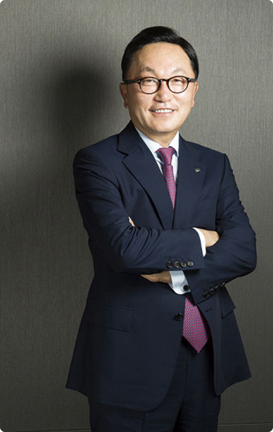

Founder & GSO
좁은 문이었던 것을 넓은 길로 만드는 혁신가
Founder & GSO
좁은 문이었던 것을 넓은 길로 만드는 혁신가
미래에셋 대표 박 현 주
Hyeon Joo Park1997미래에셋벤처캐피탈 및 미래에셋자산운용 설립
2001미래에셋 회장
2002하버드대학교 비즈니스스쿨 최고경영자과정 수료
2009언스트앤영 최우수 기업가상 마스터상
2011금융투자협회 금융투자인상 대상
2015경영학자 선정 대한민국 최우량기업 대상
2017다산금융상 대상
2021경영학자 선정 대한민국 경영자 대상
1997국제경영학회 선정 올해의 국제 최고경영자상

미래에셋금융그룹
회장 박 현 주
창업
“고객과 사회를 위해, 투자회사가 해야 할 일을 생각했습니다.
미래를 향한 유니크한 투자 철학을 가진 회사를 만들고 싶었습니다.
그것이 지금 미래에셋의 본질입니다.”
Permanent Innovator
“미래에셋은 늘 도전해 왔고 그 도전의 추동력은 혁신입니다.
시작은 미래에셋의 불가능한 상상이었지만
지금은 사회가 인정하는 현실의 길이 되었습니다.”
Eye for the Future
“투자 없이 성장도 없습니다.
우리는 투자를 통해 미래를 바꿀 수 있다는 믿음을 가져야 합니다.
미래를 향한 투자와 혁신을 멈추지 않는다면,
우리는 미래를 바꿀 수 있습니다.”
미래에셋박현주재단
”세상은 빠르게 변화하고 있습니다.
그러나 우리의 감성은 따뜻함을 잃어서는 안 될 것입니다.
미래에셋이 초기부터 해왔던 사회공헌 활동은
사회와 사람에 대한 사랑의 정신이 깔려 있습니다.”